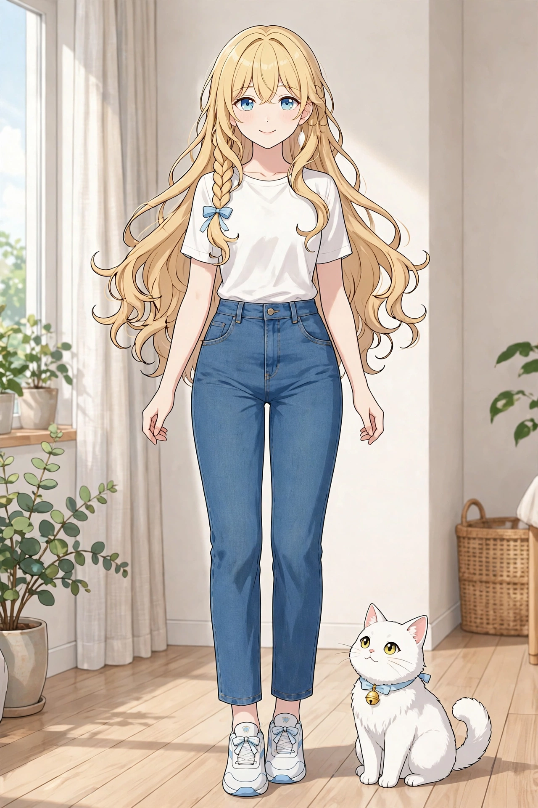

デニムで脚を長く見せる選び方（40代）

ルミ：股上の深さはサイズ表で確認するにゃ。見た目だけじゃ分からないよ。
この記事の商品（先に比較）
| 商品 | 価格（税込） | お店 |
|---|---|---|
| antiqua ワイドデニム（タック入り） | 12,990円 | antiqua（アンティカ） |
| ハイウエスト ストレートデニム | 6,620円 | セキュアデポ |
| ストレッチ スリムストレートデニム | 2,680円 | パンツスタイルラボ 楽天市場店 |
目安1：股上は深め（30cm以上が目安）
股上が深いデニムは、ウエストの位置がおへその上あたりに来ます。腰の位置が高く見えるので、脚が長く見えます。サイズ表の「股上」が30cm以上あるものを目安にしてください。今回の商品では、antiquaのワイドデニムが股上33〜35cm、CONRONのストレートデニムも股上深めの設計です。
目安2：丈は足首が見える長さ
9分丈で足首が見えると、裾に抜けが出て脚がすっきり見えます。フルレングスを選ぶときは、靴の甲にかかる程度の丈にして、裾が床につかないようにしてください。中途半端にふくらはぎで切れる丈は、脚を短く見せます。
目安3：生地は落ち感とストレッチ
横に張る硬い生地は下半身を大きく見せます。すとんと落ちる生地で、少しストレッチが入っているものが動きやすく、座ったときも楽です。綿100%の風合いが好きな人は、タック入りで腰まわりにゆとりのある形を選んでください。
あえて推さないもの
- ローライズのデニム（腰の位置が下がって見え、脚が短く見えます）
- ふくらはぎ丈のデニム（脚が太く見えます）
- 薄くて透ける生地（ラインを拾い、安っぽく見えます）
股上の測り方とサイズ表の見方
股上の深さは、商品ページのサイズ表で確認できます。表記は「股上」「前股上」「股上（前）」など店によって少し違いますが、ウエストの上端から股の付け根までの長さです。手持ちのデニムで比べたいときは、平らに置いてウエスト前側の上端から股の縫い目までをまっすぐ測ってください。いま履いているデニムより2〜3cm深いものを選ぶと、ウエスト位置の違いがはっきり出ます。
もう1つ見ておきたいのが「わたり幅」と「裾幅」です。股上が深くても、わたり幅が極端に細いと腰まわりが窮屈で、座ったときにウエストが食い込みます。ストレッチ入りの生地は最初きつめでも伸びますが、綿100%はほぼ伸びないので、サイズ表の数値をそのまま信じて選んでください。
トップスとの合わせ方
股上深めのデニムは、トップスを前だけ少し入れる「前イン」と相性が良いです。ウエストの位置が見えることで脚の長さが際立ちます。全部入れるのが苦手な人は、シャツやブラウスの裾を前中央だけ5cmほど入れると、自然にウエストが見えます。逆に、丈の長いトップスでウエストを完全に隠すと、せっかくの股上の深さが活きません。トップスは短め丈か、インできる丈を選んでください。
購入前のチェック（座る・歩く・かがむ）
- 座ったときにウエストが背中側に食い込まないか（股上が深い分、座り姿勢で当たることがあります）
- 歩いたときに裾が靴に引っかからないか（フルレングスは特に確認）
- かがんだときに後ろのウエストが下がりすぎないか
- ポケットにスマホを入れたときのライン（太ももが張って見えないか）
長くはくためのお手入れ
デニムは洗うたびに少しずつ色と張りが落ちます。裏返して洗濯ネットに入れ、干すときはウエストを上にして形を整えると、股上のラインが崩れにくくなります。ストレッチ入りのものは乾燥機で縮みやすいので、自然乾燥がおすすめです。
この記事の目安に合う商品
特徴：ハイウエストで股上深めのデニム3点。価格帯の違うものを並べました。価格は2026年11月22日に商品ページで確認したものです。セールで変わることがあります。


あわせて読みたい：ヒップ・太ももが気になる人のボトムスの選び方／ボトムス種類別ガイド／夕方の脚のむくみケア
NEXT — 次に読む座りっぱなしの日も楽なワイドパンツの選び方（40代）